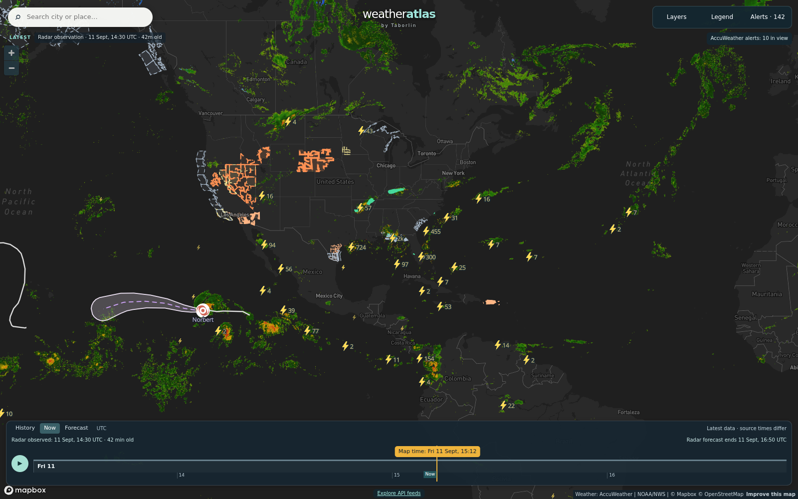

Daily severe-weather intelligence for LNG, refining, offshore, and terminal operators.

Live radar + lightning, 11 Sept 14:30 UTC — Tropical Storm Norbert southwest of Baja; convective activity over Mexico and the US Southwest. Interactive radar + hurricane tracker: accuweather.taborlin.co.
| System | Status | Energy-asset impact |
|---|---|---|
| Atlantic / Gulf / Caribbean | QUIET | No active tropical cyclones; no formation expected through 7 days (NHC) — Gulf LNG/refining corridor clear through midweek |
| TS Norbert (E Pacific) | STRENGTHENING | 65 mph, 996 mb, moving W away from Baja; forecast to become a hurricane this weekend — marine warnings for East Pacific tanker lanes; Costa Azul LNG (Baja Pacific coast) unaffected |
| EP disturbance (SW of Mexico) | 80% / 7d | Tropical depression likely late weekend/early week, tracking W over open East Pacific — no terminal threat; monitor Monday |
| Central Pacific trough (SE of Hawaii) | 20% / 7d | Weak, meandering — no threat to Hawaii refining or tanker routes |
| Australia NW Shelf | QUIET | Clear at Wheatstone/Gorgon through 5 days, warming to 90°F Monday; cyclone season opens Nov 1 — pre-season review window now |
Same hour, same coordinates (Wheatstone LNG jetty, Western Australia, overnight tonight), two very different answers on wind — and only one matches the site observation:
Clear 61-68°F overnight with calm winds — the week's best crew and crane window — while free feeds print phantom 35+ mph gusts. Cyclone-season prep angle inside.
Full asset brief →Same story: AccuWeather calm 6-8 mph vs free-feed 54-58 mph gusts overnight; 88-90°F early next week for turnaround crews. Same live comparison table in the brief.
Full asset brief →